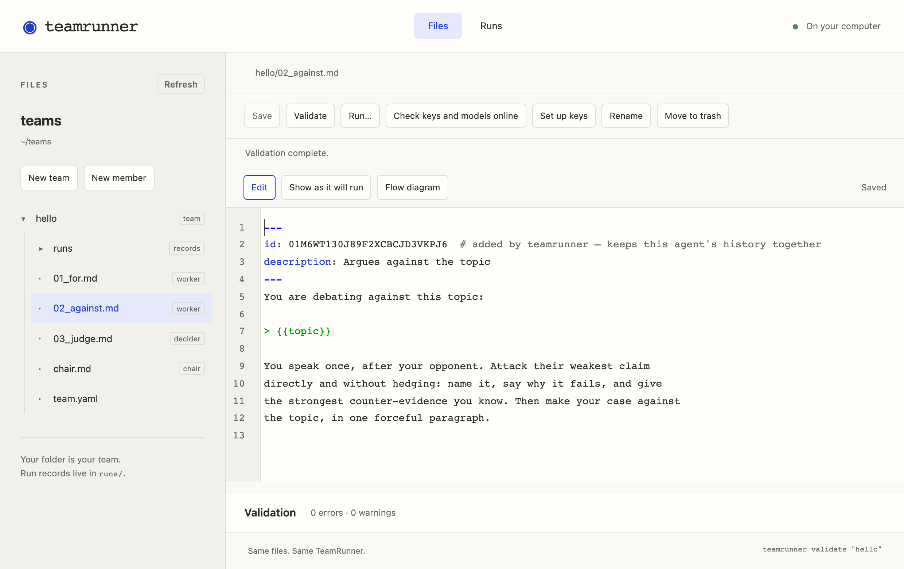

Tutorial · step 0
Install TeamRunner
Two commands: one installs uv, the other installs TeamRunner with it. You don’t need Python first. About two minutes, and it costs nothing.
What is uv? One small program that does the whole Python job for you: it fetches the right version of Python, installs tools like TeamRunner each in their own space so they never clash, keeps them up to date, and runs them. It replaces installing Python, pip and virtual environments by hand.
It is free and open source, made by Astral. Nothing it installs touches the rest of your computer’s Python.
Your system
You type these in a terminal. Paste a line and press Return.
- Open Terminal (press ⌘ Space, type “Terminal”, press Return) and install uv:
curl -LsSf https://astral.sh/uv/install.sh | sh - Close Terminal and open it again, so it finds uv. Then install TeamRunner:
uv tool install teamrunner - Open TeamRunner in your browser:
teamrunner ui
- Open PowerShell or Command Prompt from the Start menu and install uv with WinGet, the Windows package manager:
winget install --id=astral-sh.uv -eIf
wingetisn’t available, choose another method from the official uv installation guide. - Close the terminal and open it again, so it finds uv. Then install TeamRunner:
uv tool install teamrunner - Open TeamRunner in your browser:
teamrunner ui
- In a terminal, install uv:
curl -LsSf https://astral.sh/uv/install.sh | shNo
curl? Usewget -qO- https://astral.sh/uv/install.sh | sh. - Open a new terminal, so it finds uv. Then install TeamRunner:
uv tool install teamrunner - Open TeamRunner in your browser:
teamrunner ui
Just looking? uvx teamrunner ui runs TeamRunner once without installing it.
or
Already have Python? Use pip
With Python 3.10 or later, one line does it. Use a virtual environment if you keep one.
pip install teamrunnerThen teamrunner ui, as above.
This installs the latest release, 0.0.6, which runs, rehearses and evaluates experiments from the browser page; 0.0.5 added experiments, the remembered workspace and the hosted demo, and 0.0.5.1 finds your teams and experiments by name from any folder. Already have an older version? uv tool upgrade teamrunner or pip install -U teamrunner.
Check that it works, for free
A rehearsal runs a whole team with no model, so it needs no key and costs nothing.
- In your browser, on the page
teamrunner uiopened: choose + Team, call itcheckand start fromround_robin. Then Run… and Rehearse team. - Or in the terminal:
teamrunner new check --from round_robinteamrunner run check --rehearse
If it ends with completed, you are set.
rehearsal · no model is called; the words are placeholders and the answers random
for 0.0s $0.0000
“[rehearsal] placeholder words, turn 1.”
against 0.0s $0.0000
“[rehearsal] placeholder words, turn 2.”
judge winner = for 0.0s $0.0000
“[rehearsal] placeholder words, turn 3.”
completed · 3 turns · 0.0s · ≈ $0.0000

Keep it up to date, or remove it
- Update:
uv tool upgrade teamrunner(with pip:pip install -U teamrunner) - Remove:
uv tool uninstall teamrunner. Your teams are ordinary folders and stay where they are.
If something goes wrong
uvorteamrunner: command not found. Close the terminal and open a new one. If it still isn’t found, runuv tool update-shell, then open a new terminal again.- Windows can’t find
winget. See the official uv installation guide for other ways to install uv, then return to step 2 above. - Anything else: open an issue or write to hello@teamrunner.ai, with what you typed and what it printed.